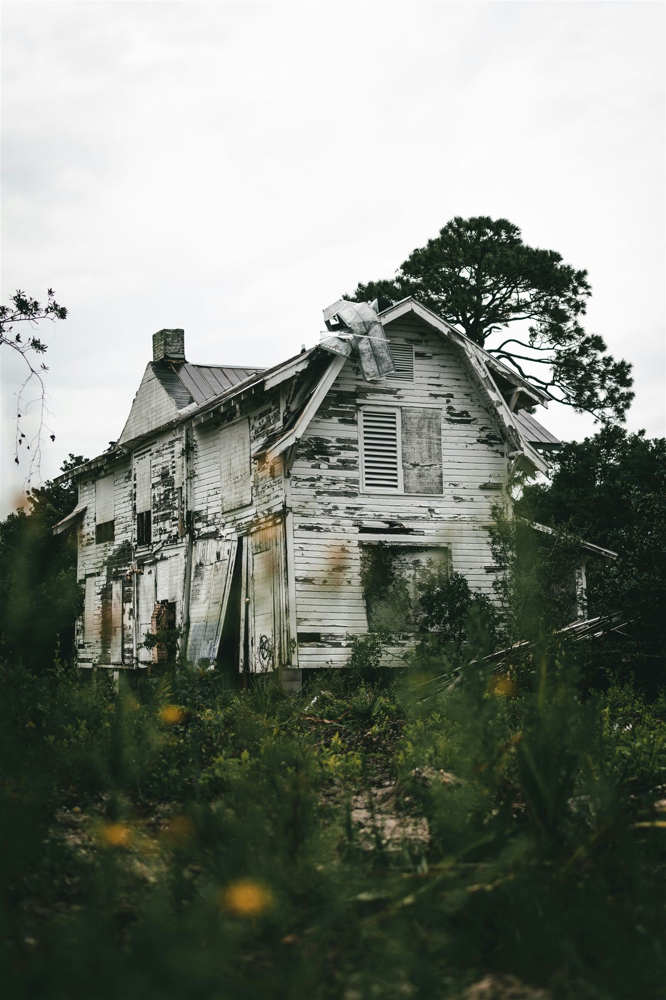

空き家を放置するとどうなる？
固定資産税6倍のリスクと今できる対策
相続した実家が空き家のまま…という方へ。2023年の法改正で何が変わったのか、放置するとどんなリスクがあるのか、そして義務化された相続登記や、土地を手放せる新しい制度も含めて、今からできる対策を解説します。

- 空き家を放置すると起きる3つのリスク
- 2023年法改正で新設された「管理不全空家」とは
- 相続登記の義務化と、土地を手放せる新しい制度
- 空き家にしないために、今からできること
空き家は全国で900万戸｜他人事ではない社会問題
総務省の「令和5年住宅・土地統計調査」によると、全国の空き家数は約900万戸に達し、総住宅数に占める空き家率は13.8％と、いずれも過去最多を更新しました。2018年の調査から5年間で50万戸以上増えた計算です。
親から実家を相続したものの、住む予定もなく、売るか貸すかも決めきれないまま時間だけが過ぎていく。そうしたケースは、決して特別な話ではありません。
空き家を放置すると起きる3つのリスク
- 固定資産税の負担が跳ね上がる。「管理不全空家」に指定されると住宅用地特例が解除され、税負担が最大6倍になる可能性があります。
- 老朽化が進み、倒壊や事故のリスクが高まる。放置期間が長いほど修繕費もかさみ、対応が難しくなっていきます。
- 近隣トラブルに発展する。雑草の繁茂やゴミの不法投棄、景観の悪化などから、近隣住民との関係が悪化するケースもあります。
2023年法改正で新設された「管理不全空家」とは
2023年12月、改正「空家等対策の推進に関する特別措置法」が施行され、「管理不全空家等」という新しい区分が設けられました。これは、放置すればいずれ「特定空家等」になるおそれがある空き家を、その手前の段階で指導・勧告の対象にする仕組みです。
| 区分 | 主な状態 | 行政の対応 |
|---|---|---|
| 管理不全空家等 | 外壁・屋根の破損、雑草や樹木の繁茂、ゴミの放置など | 助言・指導。従わない場合、固定資産税の住宅用地特例が解除 |
| 特定空家等 | 倒壊の危険、衛生上有害、著しい景観の悪化など | 勧告・命令。従わない場合、行政代執行（強制解体・費用請求） |
指導に従わず状態が悪化すると、管理不全空家から特定空家に格上げされ、最終的には行政による強制解体（行政代執行）の対象になることもあります。災害時など緊急性が高い場合は、所有者への通知や命令の手続きを省略する「略式代執行」が行われることもあります。
固定資産税が6倍になる仕組み
住宅が建っている土地には、固定資産税を最大6分の1に軽減する「住宅用地特例」が適用されています。多くの空き家所有者は、この優遇を受けながら空き家を保有してきました。
しかし、管理不全空家に指定され、自治体からの指導・勧告に従わないままでいると、この特例の対象から外れます。結果として、実質的に固定資産税が最大6倍になる可能性があるのです。評価額によっては、年間の負担が数万円〜十数万円単位で増えるケースもあります。
相続登記が義務化されています（2024年4月〜）
2024年4月1日から、相続によって不動産を取得した人は、相続を知った日から3年以内に相続登記を申請することが法律上の義務になりました。正当な理由なく期限内に申請しないと、10万円以下の過料の対象になる可能性があります。
この義務化は、2024年4月1日より前に発生した相続にもさかのぼって適用されます。「登記名義が祖父母のまま」という不動産も対象で、経過措置の期限は2027年3月31日です。遺産分割の話し合いがまとまっていない場合でも、「相続人申告登記」という簡易な手続きで、ひとまず義務を果たしたことにできる制度もあります。
あわせて2026年4月1日からは、登記済みの所有者の住所や氏名に変更があった場合の変更登記も義務化されています。変更から2年以内に登記しないと、5万円以下の過料の対象になります。実家を離れて住所が変わっている相続人がいる場合は、注意しておきたいポイントです。
手放したい土地は「相続土地国庫帰属制度」も選択肢に
「実家の土地を相続したものの、活用も売却も難しい」というケースのために、2023年4月から「相続土地国庫帰属制度」が始まっています。一定の要件を満たせば、相続した土地を国に引き取ってもらうことができる制度です。
ただし、誰でも無条件に使えるわけではありません。建物が建っている土地、土壌汚染がある土地、担保権が設定されている土地、境界が不明確な土地などは対象外です。また、引き取ってもらう際には、10年分の管理費用に相当する負担金を納める必要があります。
建物付きの空き家をそのまま国に引き取ってもらうことはできないため、この制度を使う場合は、事前に解体して更地にしておく必要がある点にも注意が必要です。
空き家にしないために、今からできること
- 現状を把握する
建物の状態、権利関係、固定資産税の課税状況を確認します。相続登記が済んでいない場合は義務化の対象になっているため、優先的に確認しましょう。 - 最低限の管理を続ける
定期的な換気・通水・草刈りだけでも、管理不全空家への指定リスクを下げられます。遠方の場合は空き家管理サービスの利用も選択肢です。 - 活用方針を決める
賃貸に出す、売却する、更地にして活用するなど、複数の選択肢を比較検討します。 - 空き家バンクを確認する
自治体が運営する空き家バンクに登録することで、移住希望者などとのマッチングにつながることがあります。 - 「空家等活用促進区域」に該当するか確認する
該当エリアでは建築基準法上の規制が緩和され、リノベーションや建て替えがしやすくなっている場合があります。 - 解体も選択肢に入れる
活用の見込みが薄い場合は、早めの解体で老朽化リスクを断つという判断も有効です。自治体の補助金制度も確認しましょう。 - 最終手段として国庫帰属も検討する
売却も活用も難しい土地は、要件を満たせば相続土地国庫帰属制度で手放すことも選択肢になります。
空き家所有でよくある後悔・失敗パターン
- 相続登記を後回しにして、方針が決められない。名義が確定しないままだと、売却も活用も進められません。
- 「そのうち何とかする」で放置してしまう。時間が経つほど老朽化が進み、管理不全空家に指定されるリスクも高まります。
- 固定資産税の仕組みを知らないまま放置する。特例が解除された後の納税通知書で、初めて負担増に気づくケースが少なくありません。
- 遠方に住んでいて、定期的な管理ができない。年に数回帰るだけでは、雑草や破損への対応が追いつかないことがあります。
実家を相続してすぐ空き家にしないためにできること
実家を相続した直後は、葬儀や各種手続きに追われ、空き家対策まで手が回らないことがほとんどです。しかし、相続登記や名義変更、家財の整理が済んでいないと、賃貸に出すことも売却することもできません。
「いつか対応しよう」と思っているうちに、管理不全空家に指定されてしまった、というケースも実際に起きています。実家を相続したタイミングで、早めに全体像を把握しておくことが、後々の負担を減らすことにつながります。
おやこと｜相続した実家を空き家にしないための手続きも支える
「おやこと」は、ご家族を見送った後、遺族からの依頼に応じて、遺族だけでは対応が難しいことの一部をサポートするサービスです。相続登記や名義変更、家財整理といった、実家を空き家のまま放置しないために必要な手続きも、亡くなった日を基準にしたタスクとして整理し、進め方を見える化します。
すべてを代行するのではなく、遺族が自分でできることは自分で進めながら、時間が取れない部分や専門性が必要な部分だけをピンポイントで依頼できる。それが、おやことの考え方です。
よくある質問
空き家を放置すると、どんな罰則がありますか？
直接的な罰金というより、固定資産税の優遇解除（最大6倍）や、改善命令に従わない場合の行政代執行（強制解体・費用請求）が主なペナルティです。倒壊の危険がある場合は過料が科されることもあります。
管理不全空家に指定されたら、どうすればいいですか？
まずは自治体からの指導・勧告の内容を確認し、雑草の除去や破損箇所の補修など、指摘された状態を改善します。自力での対応が難しい場合は、空き家管理サービスや解体業者への相談を早めに行うことをおすすめします。
相続放棄をすれば、空き家の管理義務はなくなりますか？
相続放棄をしても、次の管理者が決まるまでは一定の管理責任が残る場合があります。判断に迷う場合は、司法書士や弁護士に早めに相談することをおすすめします。
空き家バンクとは何ですか？
自治体が運営する、空き家の所有者と、購入・賃借を希望する移住者などをつなぐマッチング制度です。地域によっては改修費用の補助金と併用できる場合もあります。
実家が空き家になりそうな場合、何から始めればいいですか？
まずは相続登記が済んでいるかどうかの確認が最初のステップです。そのうえで、最低限の管理を続けながら、売却・賃貸・解体のどれを選ぶか、家族で方針を話し合っておくと後の負担が軽くなります。
相続登記をしないとどうなりますか？
2024年4月から相続登記が義務化されており、相続を知った日から3年以内に申請しないと、10万円以下の過料の対象になる可能性があります。過去に発生した相続もさかのぼって対象になるため、名義が祖父母のままになっている不動産がないか確認しておくことをおすすめします。
いらない土地を国に引き取ってもらうことはできますか？
「相続土地国庫帰属制度」を使えば、一定の要件を満たした土地を国に引き取ってもらうことができます。ただし建物付きの土地は対象外で、事前の解体が必要なことや、10年分の管理費用に相当する負担金がかかることには注意が必要です。
まとめ｜「そのうち」が一番のリスク
空き家問題の多くは、悪意や無関心から生まれるのではなく、「そのうち何とかしよう」という先送りの積み重ねから生まれます。相続や実家じまいと同じく、早めに現状を把握し、方針を決めておくことが、結果的に一番の対策になります。
「おやこと」は、ご遺族からの依頼を受けて、遺族だけでは対応が難しいことの一部をサポートするサービスです。相続登記や実家の整理など、空き家化を防ぐために必要な手続きも、亡くなった日を基準にしたタスクとして整理し、効率よく進められるようにお手伝いします。